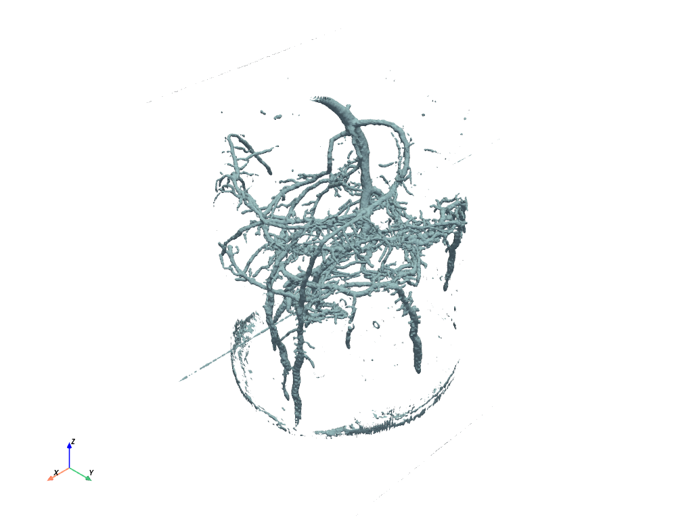

注釈
Click here to download the full example code or to run this example in your browser via Binder
ダウンロードとプロット例#
注釈
これは ダウンロードとプロット例 に対する解答です．もしまだ自力で解決しようとしていないのであれば，おそらく最初にそれを試すべきでしょう．
サンプルデータセットをダウンロードし，プロットすることができます．
PyVistaには， pyvista.examples.downloads で文書化された多くのダウンロード可能なデータセットがあります．Pythonを通じてこれらをダウンロードし，すぐにプロットすることができます．
これは，PyVista内のサンプルデータセットを手動でコピーしてロードすることなく，すぐに使い始めることができる簡単な方法です．
PyVista と examples モジュールをインポートします#
import pyvista
from pyvista import examples
表面データセット - ダウンロード#
松の根の表面データセットをダウンロードします．データセットが自動的にPythonに読み込まれることに注意してください．
表面データセット - プロット#
PyVistaのデフォルトのプロット設定を使用して，松根をプロットします．
ボリュームデータセット - ダウンロード#
ボルトのデータセットをダウンロードします．このデータセットは， "volumetric" プロットを使って可視化するのに最適なデータセットです．
ボリュームデータセット - プロット#
ここでは，カスタムビューの方向を使ってデータセットをプロットしています．
pl = pyvista.Plotter()
_ = pl.add_volume(
dataset,
cmap="coolwarm",
opacity="sigmoid_5",
show_scalar_bar=False,
)
pl.camera_position = [(194.6, -141.8, 182.0), (34.5, 61.0, 32.5), (-0.229, 0.45, 0.86)]
pl.show()
練習問題 #1 - PyVistaのサンプルを使う#
PyVistaの組み込み例の一つを可視化します．
IDEがサポートしていれば， dataset = examples.download_ と入力し，タブを押すと，ダウンロードできるすべてのサンプルを見ることができるはずです．
dataset = examples.download_gears()
bodies = dataset.split_bodies()
bodies.plot(
cmap='jet',
multi_colors=True,
smooth_shading=True,
split_sharp_edges=True,
)
練習問題#2 - ファイルのダウンロードと表示#
データセットをダウンロードして， pyvista.read で読み込んで実験してみてください．自分で作ったファイルを使ってもいいですし，以下のソースからダウンロードしてもいいでしょう．
解決方法 ファイル 'P_shelf_pin.stl' を https://www.thingiverse.com/thing:5412753 からダウンロードします．
mesh = pyvista.read('P_shelf_pin.stl')
mesh.plot()

Total running time of the script: ( 0 minutes 5.887 seconds)